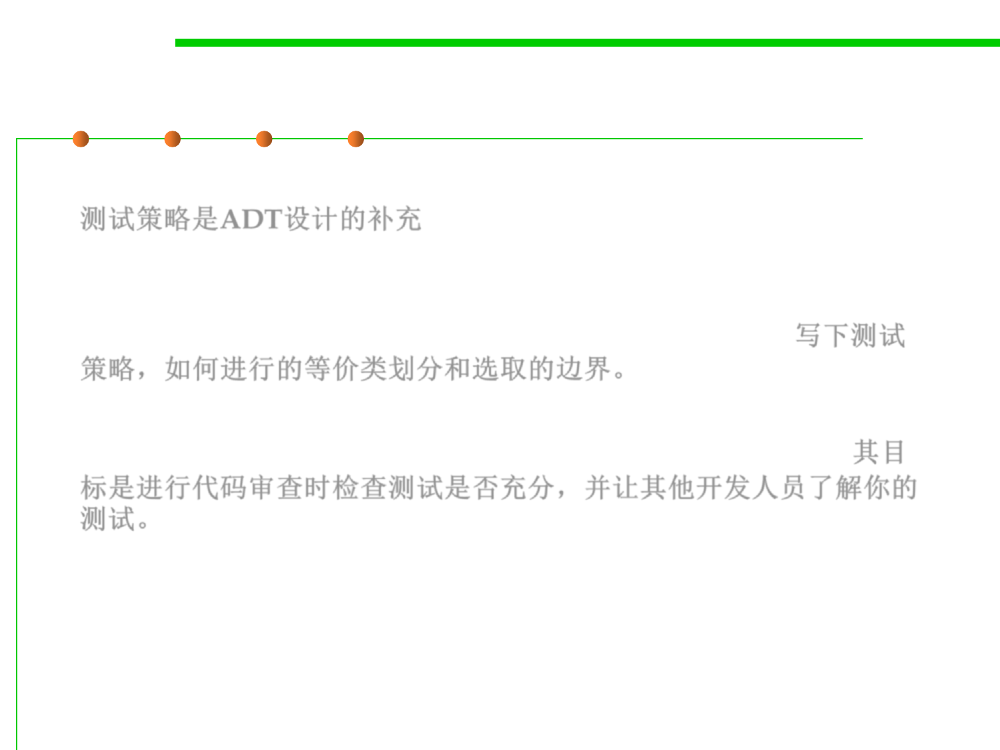

7.5 Testing and Test-First Programming
Documenting Testing Strategy
▪ Unit testing strategy is a complementary document of ADT’s design.
测试策略是ADT设计的补充
▪ Aligning with the idea of test-first programming, it is recommended
to write down the testing strategy (such as partitioning and
boundary) according to which you design your test cases. 写下测试
策略，如何进行的等价类划分和选取的边界。
▪ The objective is to make code review to check if your testing is
sufficient, and to make other developers understand your test. 其目
标是进行代码审查时检查测试是否充分，并让其他开发人员了解你的
测试。